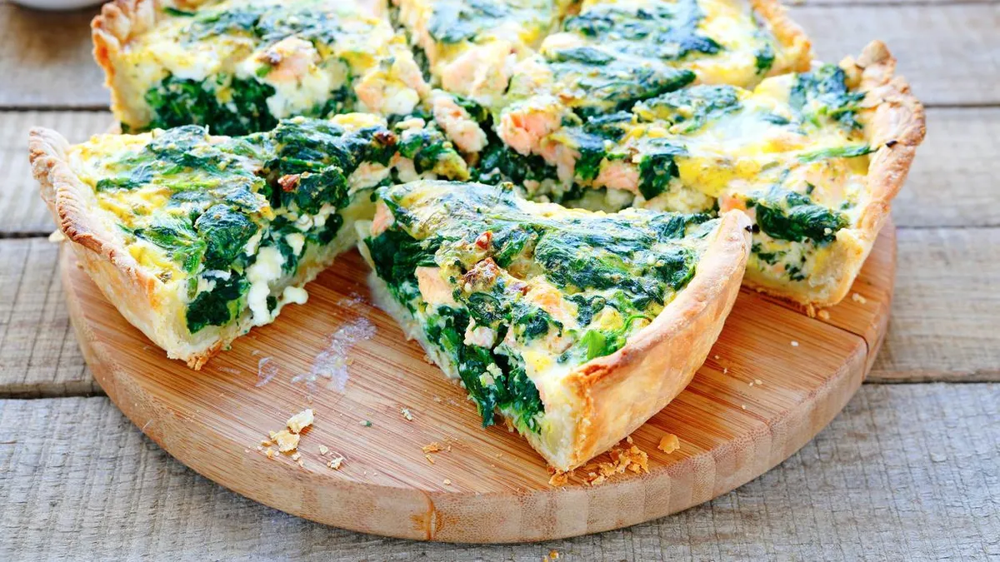

Tarta de Verduras
Una opción saludable y deliciosa, ideal para almuerzos o cenas livianas. Se puede preparar con cualquier verdura que tengas en casa y es perfecta para comer caliente o fría.
Autor
Pedro Pascal

Pedro Pascal es un chef apasionado por la cocina creativa y la fusión de sabores. Con años de experiencia en reconocidos restaurantes internacionales, ha logrado combinar técnicas tradicionales con innovaciones modernas, creando platos que no solo sorprenden al paladar, sino que también cuentan historias.
Ingredientes
Para la Tarta
- 1 tapa para tarta
- 2 huevos
- 1 cebolla
- 1 zanahoria
- 200 g de acelga o espinaca
- Queso rallado
- Sal, pimienta y aceite
Receta
- Picar la cebolla y la zanahoria, saltearlas en aceite hasta que estén tiernas.
- Agregar la acelga o espinaca picada y cocinar por unos minutos hasta que se reduzca.
- Retirar del fuego y dejar enfriar.
- En un bol, batir los huevos y mezclar con las verduras y el queso rallado.
- Salpimentar al gusto.
- Colocar la masa en una tartera, volcar la mezcla y emparejar la superficie.
- Hornear a 180 °C por unos 35 minutos, hasta que la superficie esté dorada.
- Servir tibia o fría, acompañada de una ensalada fresca.
Califica esta receta y deja tu opinión
Selecciona una calificación